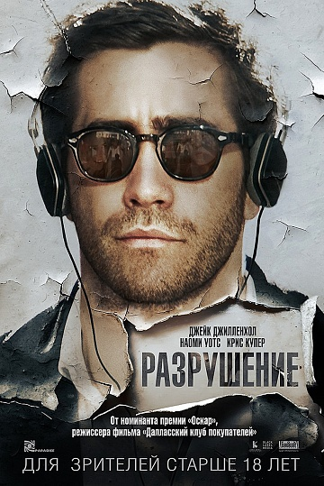
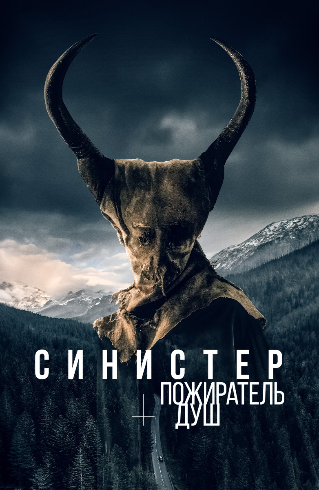

 Team fortress 2
американская драма режиссёра Жан-Марка Валле, вышедшая на экраны в 2015 году. Фильм открытия 40-го Международного кинофестиваля в Торонто. «Разрушение» был последним художественным фильмом Жан-Марка Валле перед его смертью 25 декабря 2021 году в возрасте 58 лет.
 Синистер. Пожиратель душ
Следователь из большого города и провинциальный констебль расследуют жестокие убийства и исчезновения трёх детей в горной деревушке, сталкиваясь со сверхъестественным злом. Напряжённый детективный хоррор из Франции.